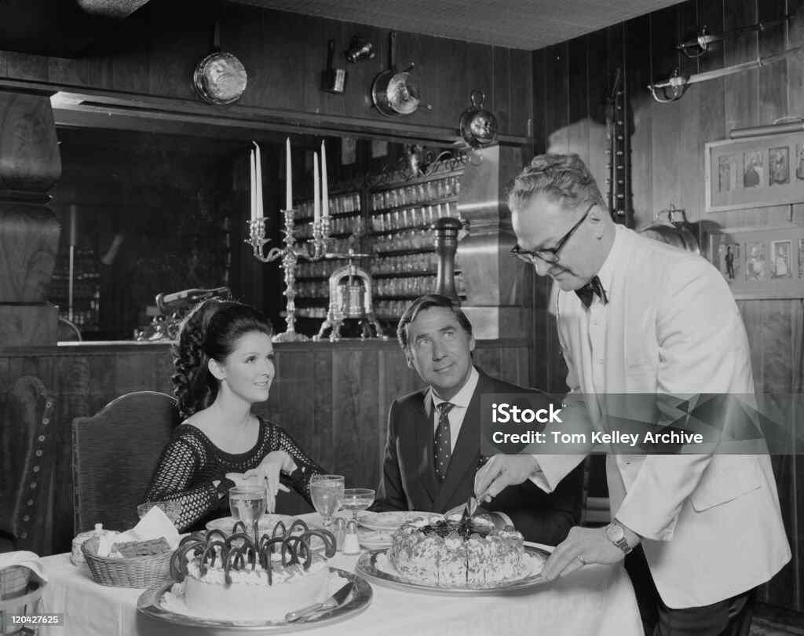

History
 “Always passionate about cooking, I had to wait until I had thirty-three years to finally take the plunge and follow my dream to the end, open my own restaurant in 2016!At ORIGINALS, there is no other ambition than to offer cuisine sincere, anchored in the seasons, authentic but modern, joyful and generous, with broad inspirations. Washed down with good wines, we want it choice tasted, swallowed, devoured, engulfed (it's up to you) in a relaxed, simple and good-natured atmosphere. Whether you have thirty minutes or two hours, whatever. Walk through the restaurant doo and we put do everything possible to ensure that these thirty minutes or two hours make you want to to come back. Our card is renewed on average every two weeks. »
About the restaurant
“Always passionate about cooking, I had to wait until I had thirty-three years to finally take the plunge and follow my dream to the end, open my own restaurant in 2016!At ORIGINALS, there is no other ambition than to offer cuisine sincere, anchored in the seasons, authentic but modern, joyful and generous, with broad inspirations. Washed down with good wines, we want it choice tasted, swallowed, devoured, engulfed (it's up to you) in a relaxed, simple and good-natured atmosphere. Whether you have thirty minutes or two hours, whatever. Walk through the restaurant doo and we put do everything possible to ensure that these thirty minutes or two hours make you want to to come back. Our card is renewed on average every two weeks. »
Best Seller
“Always passionate about cooking, I had to wait until I had thirty-three years to finally take the plunge and follow my dream to the end, open my own restaurant in 2016!At ORIGINALS, there is no other ambition than to offer cuisine sincere, anchored in the seasons, authentic but modern, joyful and generous, with broad inspirations. Washed down with good wines, we want it choice tasted, swallowed, devoured, engulfed (it's up to you) in a relaxed, simple and good-natured atmosphere. Whether you have thirty minutes or two hours, whatever. Walk through the restaurant doo and we put do everything possible to ensure that these thirty minutes or two hours make you want to to come back. Our card is renewed on average every two weeks. »